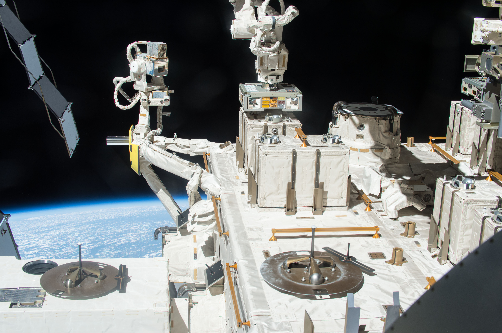
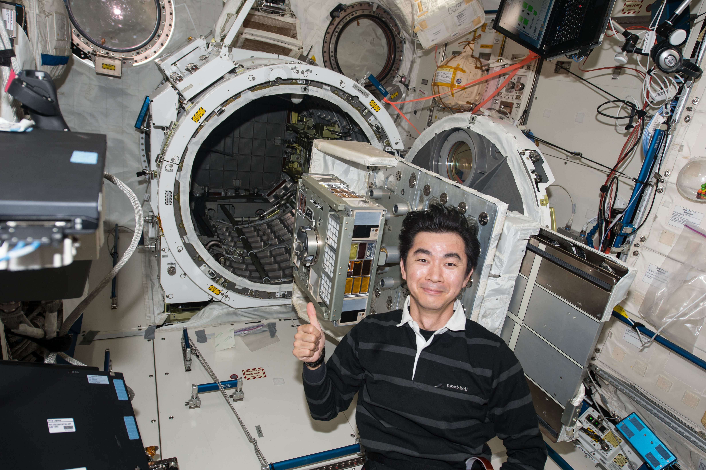
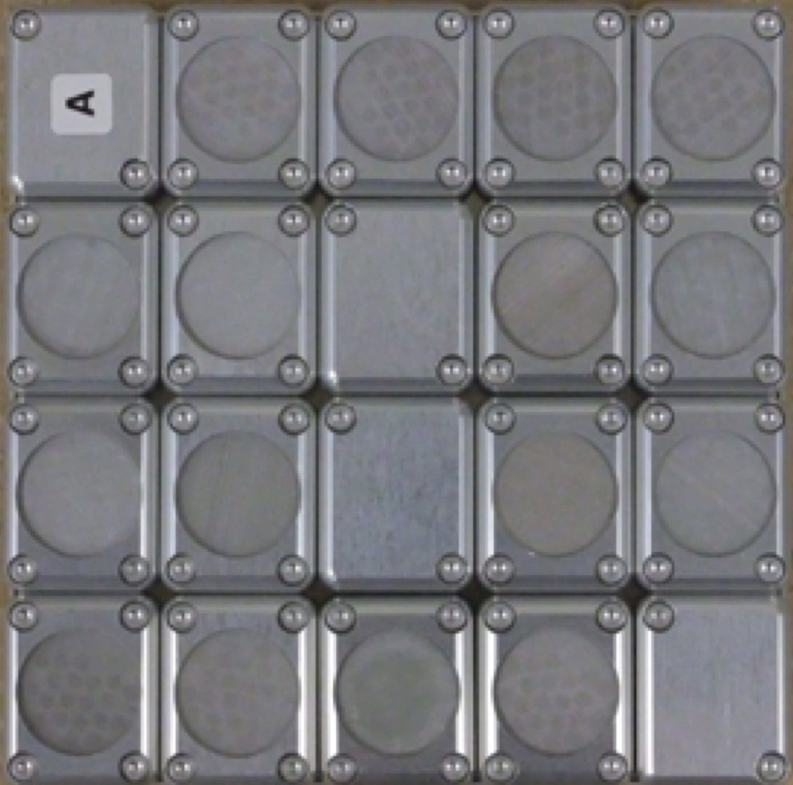

Bacteria could survive the travel from Earth to Mars, and vice versa, when forming aggregates
The hypothesis called 'panspermia' proposes an interplanetary transfer of life.Microbes inside shielding material such as rocks could be protected from UV-irradiation and survive during space travel as supported by the 'lithopanspermia' theory.In this study, researchers show that even without rock shielding, aggregates of bacteria, if thick enough, could survive outer space conditions for several years, raising the new concept of 'massapanspermia'.
Imagine microscopic life-forms, such as bacteria, transported through space, and landing on another planet.The bacteria finding suitable conditions for its survival could then start multiplying again, sparking
life at the other side of the universe.This theory, called 'panspermia', support the possibility that microbes may migrate between planets and distribute life in the universe.Long controversial, this theory implies that bacteria would survive the long journey in outer space, resisting to space vacuum, temperature fluctuations, and space radiations.
'The origin of life on Earth is the biggest mystery of human beings.Scientists can have totally different points of view on the matter.Some think that life is very rare and happened only once in the Universe, while others think that life can happen on every suitable planet.If panspermia is possible, life must exist much more often than we previously thought' says Dr. Akihiko Yamagishi, researcher at Tokyo University of Pharmacy and Life Sciences and principal investigator of the space mission Tanpopo.
In 2018, Dr. Yamagishi and his team tested the presence of microbes in the atmosphere.Using an aircraft and scientific balloons, the researchers, found Deinococcal bacteria floating 12 km above the earth.But while
Deinococcus are known to form large colonies (easily larger than one millimeter) and be resistant to environmental hazards like UV radiation, could they resist long enough in space to support the possibility of panspermia?
To answer this question, Dr. Yamagishi and the Tanpopo team, tested the survival of the radioresistant bacteria
Deinococcus in space.The study, now published in
Frontiers in Microbiology , shows that thick aggregates can provide sufficient protection for the survival of bacteria during several years in the harsh space environment.
DNA damage and survival time course of deinococcal cell pellets during three years of exposure to outer space ► Read original article ► Download original article (pdf)
To come to this conclusion, Dr. Yamagishi and his team, placed dried
Deinococcus aggregates in exposure panels outside of the International Space Station (ISS).The samples of different thicknesses were exposed to space environment for one, two, or three years and then tested for their survival.
After three years, the researchers found that all aggregates superior to 0.5 mm partially survived to space conditions.Observations suggest that while the bacteria at the surface of the aggregate died, it created a protective layer for the bacteria beneath ensuring the survival of the colony.Using the survival data at one, two, and three years of exposure, the researchers estimated that a pellet thicker than 0.5 mm would have survived between 15 and 45 years on the ISS.The design of the experiment allowed the researcher to extrapolate and predict that a colony of 1mm of diameter could potentially survive up to 8 years in outer space conditions.'The results suggest that radioresistant
Deinococcus could survive during the travel from Earth to Mars and
vice versa , which is several months or years in the shortest orbit,' says Dr. Yamagishi, corresponding author of the study.
This work provides, to date, the best estimate of bacterial survival in space.And, while previous experiments prove that bacteria could survive in space for a long period when benefitting from the shielding of rock (i.e. lithopanspermia), this is the first long-term space study raising the possibility that bacteria could survive in space in the form of aggregates, raising the new concept of 'massapanspermia'.Yet, while we are one step closer to prove panspermia possible, the microbe transfer also depends on other processes such as ejection and landing, during which the survival of bacteria still needs to be assessed.
(1) The bacterial exposure experiment took place from 2015 to 2018 using the Exposed Facility located on the exterior of Kibo, the Japanese Experimental Module of the International Space Station.(2) Japanese astronaut Mr. Yugi set-up the exposure experiment module ExHAM on the ISS.(3) Exposure chambers outside the ISS.(4) The ISS viewed from outside.(Image credits: JAXA/NASA)
Original article: DNA damage and survival time course of deinococcal cell pellets during three years of exposure to outer space
REPUBLISHING GUIDELINES: Open access and sharing research is part of Frontiers’ mission.Unless otherwise noted, you can republish articles posted in the Frontiers news blog — as long as you include a link back to the original research.Selling the articles is not allowed.
Posted On: 2020-08-26T00:00:00
Posted By: Lucie Sammicheli



Content Date: 2020-08-26
Download Date: 2021-07-10
Document ID: L0C04F3X8